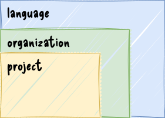
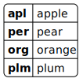
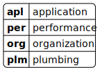
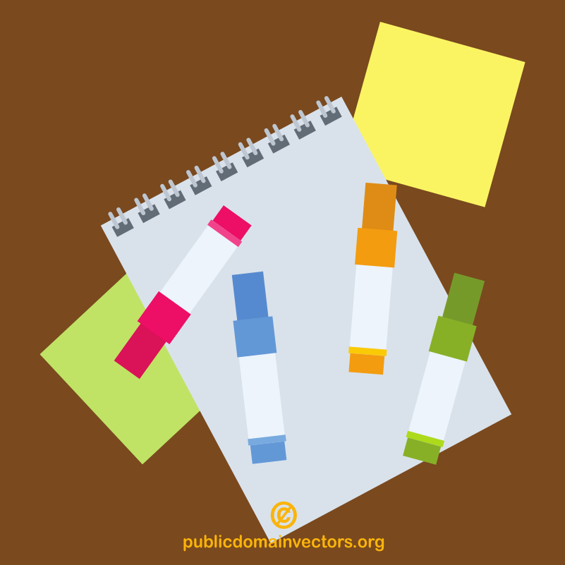

clean code
Gergő Pintér, PhD
gergo.pinter@uni-corvinus.hu
software design and architecture stack
![based on Khalil Stemmel’s figure [1]](figures/the_software_design_and_architecture_stack_generalized.drawio.svg)
what is clean code
- the term, clean code refers to code that’s easy to read,
understand, and maintain
- popularized by Robert C. Martin
- guideline how to write readable, understandable, and maintainable
code
- although not every “rule” applies to every language / situation
why it matters
misconception: program code is mostly written, while in reality it is mainly read
a well-written code is easy to read, understand, debug, maintain, extend, etc.
Any fool can write code that a computer can understand. Good programmers write code that humans can understand.
– Martin Fowler [2]
- where human can be the future you, current or future colleague…
- like having a nice handwriting
clear is better than clever
In any kind of programming, clarity should always be the primary goal.
Writing code that is straightforward and understandable is more valuable than trying to craft overly clever or intricate solutions.
– Go Proverbs by Rob Pike
source: Rob Pike’s Go Proverbs
prime check – clever vs. clear
source: Rob Pike’s Go Proverbs
func isPrime(n int) bool {
if n < 2 {
return false
}
for i := 2; i <= int(math.Sqrt(float64(n))); i++ {
if n%i == 0 {
return false
}
}
return true
}- iterating only up to the square root of n because if n has any divisor greater than its square root, there must also be a corresponding divisor smaller than the square root
- it is easier to understand than the “clever one”, but less wasteful then the “clear one”
- why is the clever on better?
- because multiplication is more efficient for the CPU than calculating the square root
hierarchy in style guides
- language level:
- Python: PEP 8 or pep8.org
- Ruby: Ruby Style Guide
- Go: Effective Go
- Rust The Rust Style Guide
- etc.
- organization level:
not just style guides, also best practices

write idiomatic code
- a prog. language implements a prog. paradigm
- a paradigm defines a certain “way” of writing code
- using different abstractions / building blocks
- promoting a given concept
- some languages implements multiple paradigms
- and languages have their own way of doing things
- languages have pros and cons for a given problem
just as in the case of natural languages, you ought to use a language properly
write idiomatic code
clean code
Clean Code: A Handbook of Agile Software Craftsmanship
by Robert C. Martin (2009) [3]
meaningful names
this section is based on the book Clean Code (chapter 2) by Robert C. Martin [3]
with own examples
use intention-revealing names
multi-word names
a study states, camelCase is faster to type but snake_case is faster to read [4]
read the style guide
avoid disinformation
Do not refer to a grouping of accounts as an
accountListunless it’s actually aList[3].
better to use accounts, it does not depend on the
collection name
inconsistent spelling is also disinformation
disinformative names would be the use of lower-case
Lor uppercaseO[3]
- they can look almost like the one and zero, respectively – use the right font
- PEP8 (Python style guide) forbids to use them
make meaningful distinctions
It is not sufficient to add number series or noise words, even though the compiler is satisfied. If names must be different, then they should also mean something different [3].
make meaningful distinctions / noise words
Noise words are another meaningless distinction. Imagine that you have a
Productclass. If you have another calledProductInfoorProductData, you have made the names different without making them mean anything different [3].
use pronounceable names
If you can’t pronounce it, you can’t discuss it without sounding like an idiot [3].
- Should
etidbe an integer? - Should
elapsed_time_in_daysbe an integer?
could be especially important for non-native speakers as some words are more difficult to pronounce
use searchable names

names for classes, functions
- a class is a model / blueprint of something
- the name should be a noun
- e.g.,
User,Activity
- e.g.,
- an object is an instance of a class
- still a noun
- e.g.,
user = User()
- a function does something
- the name should contain a verb
- in imperative
- e.g.,
aggregate_activity activity_aggregation
avoid encodings
with modern IDEs it is pointless to put type or role markers into names
Hungarian notation
- invented by Charles Simonyi at Microsoft
- adding a prefix to a name that gives information about type, length, or scope
source: [5]
avoid mental mapping
Readers shouldn’t have to mentally translate your names into other names they already know [3].


don’t pun or use humor
- no inside jokes
- no colloquialisms or slang
- be objective and professional
Say what you mean. Mean what you say [3].
pick one word per concept
it’s confusing to have
fetch,retrieve, andgetas equivalent methods of different classes [3]
it also helps to search for the term
add meaningful context
Imagine that you have variables named firstName, lastName, street, houseNumber, city, state, and zipcode. Taken together it’s pretty clear that they form an address. But what if you just saw the state variable being used alone in a method? [3]
- adding a prefix?
- e.g.,
addrCity,addrStreet,addrState
- e.g.,
- as notations are discouraged, use an
Addressclass instead to add context
functions
this section is based on the book Clean Code (chapter 3) by Robert C. Martin [3]
with own examples
functions should be as small as possible
Functions should hardly ever be 20 lines long [3]
- shorter functions are easier to understand
do one thing (single responsibility principle)
import sqlite3
import pandas as pd
con = sqlite3.connect("data.db")
data = pd.read_sql(activity_query, con)
records = []
for woy in range(36, 40):
for dow in range(1, 8):
records.append([woy, dow, 0])
empty = pd.DataFrame.from_records(
records, columns=["week_of_year", "day_of_week", "count"]
)
data = (
pd.concat([data, empty])
.drop_duplicates(subset=["week_of_year", "day_of_week"], keep="first")
.sort_values(["week_of_year", "day_of_week"])
.reset_index(drop=True)
)
activity = pd.pivot(
data, index=["week_of_year"], columns=["day_of_week"], values=["count"]
).values
res = con.execute(progress_query)
progress = res.fetchone()[0]debug tables
| week_of_year | day_of_week | count |
|---|---|---|
| 36 | 2 | 1 |
| 38 | 5 | 1 |
| 39 | 6 | 2 |
| day_of_week | 1 | 2 | 3 | 4 | 5 | 6 | 7 |
|---|---|---|---|---|---|---|---|
| week_of_year | |||||||
| 36 | 0 | 1 | 0 | 0 | 0 | 0 | 0 |
| 37 | 0 | 0 | 0 | 0 | 0 | 0 | 0 |
| 38 | 0 | 0 | 0 | 0 | 1 | 0 | 0 |
| 39 | 0 | 0 | 0 | 0 | 0 | 2 | 0 |
| week_of_year | day_of_week | count |
|---|---|---|
| 36 | 1 | 0 |
| 36 | 2 | 0 |
| … | … | … |
| 36 | 7 | 0 |
| 37 | 1 | 0 |
| … | … | … |
| 37 | 7 | 0 |
| 38 | 1 | 0 |
| … | … | … |
| 38 | 5 | 0 |
| … | … | … |
| 39 | 6 | 0 |
| 39 | 7 | 0 |
the inverse scope law of function names
The longer the scope of a function, the shorter its name should be. Functions that are called locally from a few nearby places should have long descriptive names, and the longest function names should be given to those functions that are called from just one place.
“longer scope”: more general part of a code

function arguments
- do not use more than three [3]
- what if you’d need more?
- wrap it into an object
- do not use flags
- “Flag arguments are ugly […] loudly proclaiming that this function does more than one thing [3].”
function as interface
DataFrame.to_csv(
path_or_buf=None, *,
sep=',',
na_rep='',
float_format=None,
columns=None,
header=True,
index=True,
index_label=None,
mode='w',
encoding=None,
compression='infer',
quoting=None,
quotechar='"',
lineterminator=None,
chunksize=None,
date_format=None,
doublequote=True,
escapechar=None,
decimal='.',
errors='strict',
storage_options=None
)no side effects
Side effects are lies. Your function promises to do one thing, but it also does other hidden things [3].
– Robert C. Martin
an operation, function or expression is said to have a side effect if it modifies some state variable value(s) outside its local environment, that is to say has an observable effect besides returning a value (the main effect) to the invoker of the operation [6].
side effect example
prefer exceptions to returning error codes
- in unix-like systems processes still return 0 if the execution was successful
- but returning error codes in functions are discouraged
FileNotFoundExceptionis better thanERRCODE_26375- meaningful name
- no mental mapping
- exception handling syntactically more readable
separating comments
# connect to the database
con = sqlite3.connect("data.db")
# query activity data
data = pd.read_sql(activity_query, con)
# create empty dataframe
records = []
for woy in range(36, 40):
for dow in range(1, 8):
records.append([woy, dow, 0])
empty = pd.DataFrame.from_records(records, columns=["week_of_year", "day_of_week", "count"])
# combine empty and sparse dataframe
data = (
pd.concat([data, empty])
.drop_duplicates(subset=["week_of_year", "day_of_week"], keep="first")
.sort_values(["week_of_year", "day_of_week"])
.reset_index(drop=True)
)
# pivot dataframe
activity = pd.pivot(
data, index=["week_of_year"], columns=["day_of_week"], values=["count"]
).valuesseparated functions
def create_empty_dataframe(start_week, end_week):
records = []
for woy in range(start_week, end_week+1):
for dow in range(1, 8):
records.append([woy, dow, 0])
return pd.DataFrame.from_records(
records, columns=["week_of_year", "day_of_week", "count"]
)
def fill_empty_with_activities(empty, activities):
return (
pd.concat([activities, empty])
.drop_duplicates(subset=["week_of_year", "day_of_week"], keep="first")
.sort_values(["week_of_year", "day_of_week"])
.reset_index(drop=True)
)
def pivot_dataframe(data):
return pd.pivot(
data, index=["week_of_year"], columns=["day_of_week"], values=["count"]
).valuesthese functions do one thing
separated functions - usage
con = sqlite3.connect("data.db")
activities = pd.read_sql(activity_query, con)
empty = create_empty_dataframe(36, 39)
data = fill_empty_with_activities(emty, activities)
activities_matrix = pivot_dataframe(data)only the comments remained, which can be read as a prose
more bad comments
journal comment
the version tracker keeps better journal
noise comments
don’t write something that is already in the code

Apollo 11 - Colossus 2A
P21VSAVE DLOAD # SAVE CURRENT BASE VECTOR
TAT
STOVL P21TIME # ..TIME
RATT1
STOVL P21BASER # ..POS B-29 OR B-27
VATT1
STORE P21BASEV # ..VEL B-7 OR B-5
ABVAL SL*
0,2
STOVL P21VEL # /VEL/ FOR N73 DSP
RATT
UNIT DOT
VATT # U(R).(V)
DDV ASIN # U(R).U(V)
P21VEL
STORE P21GAM # SIN-1 U(R).U(V), -90 TO +90
SXA,2 SET
P21ORIG # 0 = EARTH 2 = MOON
P21FLAGsource, GitHub repository, more about the Apollo Guidance Computer: [7]
good comments
legal comments
some open source licences should be included to the beginning of the files
informative comments
documentation
def fizzbuzz(i: int) -> str:
"""Fizzbuzz is a game for children to teach them about division.
It is also a common coding practice.
Parameters
----------
i : int
Input number tested against division by 3, 5 and 15.
Returns
-------
str
`Fizz` if input divisible by 3, `Buzz` if divisible by 5 and `FizzBuzz` if both.
"""
result = ""
if i % 15 == 0:
result += "FizzBuzz"
elif i % 3 == 0:
result += "Fizz"
elif i % 5 == 0:
result += "Buzz"
else:
result = str(i)
return resultdoctest
def fizzbuzz(i: int) -> str:
"""
>>> fizzbuzz(3)
'Fizz'
>>> fizzbuzz(5)
'Buzz'
>>> fizzbuzz(12)
'Fizz'
>>> fizzbuzz(15)
'FizzBuzz'
>>> fizzbuzz(17)
'17'
"""
result = ""
if i % 15 == 0:
result += "FizzBuzz"
elif i % 3 == 0:
result += "Fizz"
elif i % 5 == 0:
result += "Buzz"
else:
result = str(i)
return result
comments
this section is based on the book Clean Code (chapter 4) by Robert C. Martin [3]
with own examples
